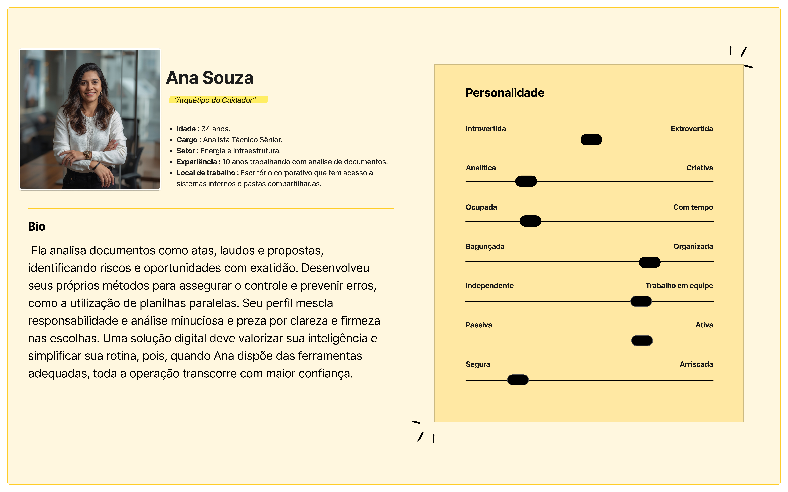
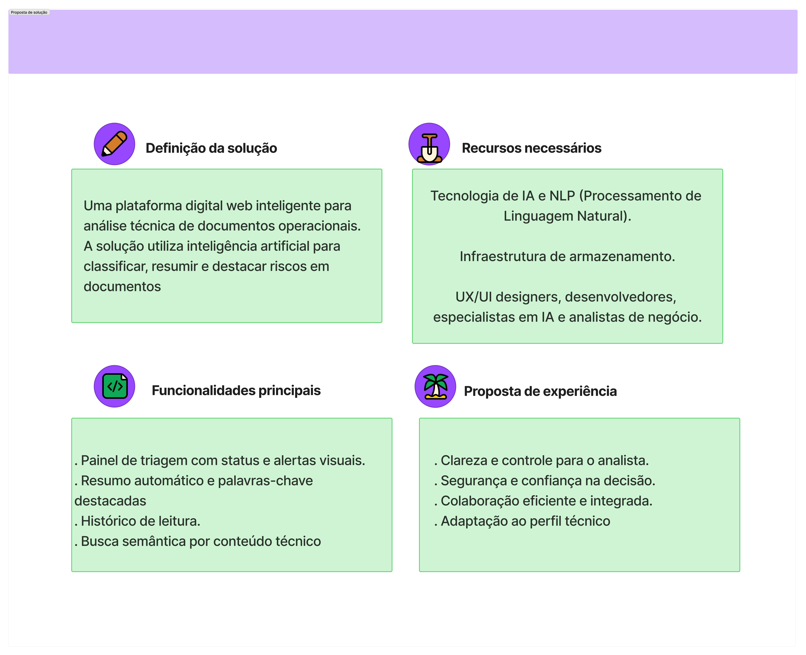
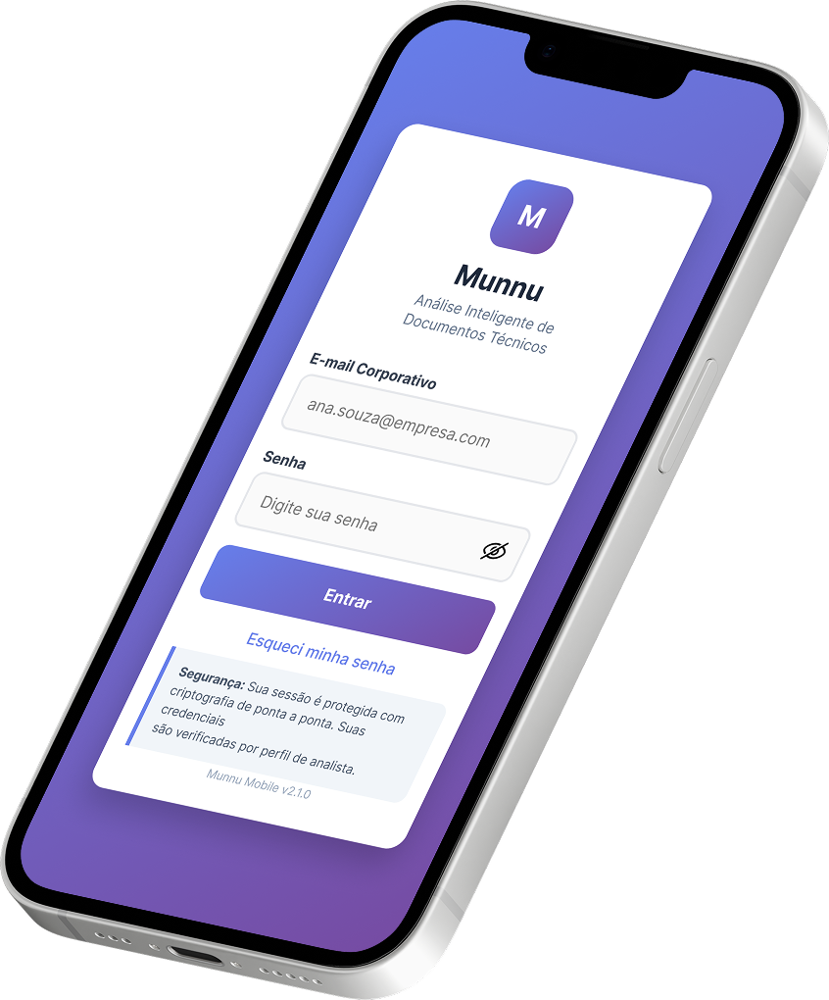
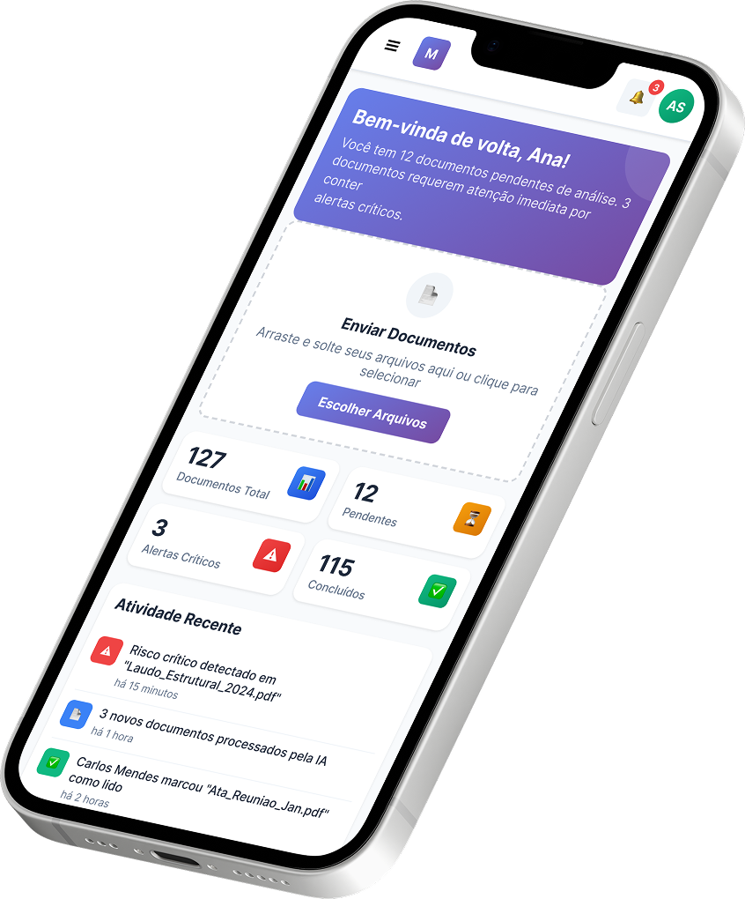
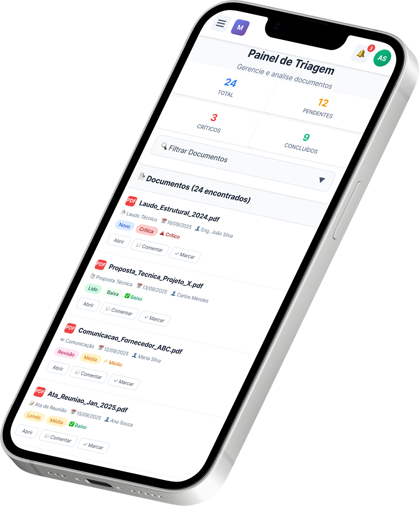

Atlântico Energia
Visão geral
A Atlântico Energia é uma empresa brasileira consolidada no setor de infraestrutura energética. A empresa gerencia dezenas de projetos simultâneos que envolvem análises técnicas complexas, laudos estruturais, relatórios de campo e documentação regulatória.
Categoria
Atuação
Introdução do projeto
Este case documenta a solução do projeto Munnu uma plataforma digital inovadora criada para resolver um gargalo crítico da Atlântico Energia.
Cenário
A documentação é essencial para garantir a conformidade com regulamentações, a comunicação eficaz entre equipes e a tomada de decisões informadas. Porém a empresa enfrentava desafios significativos na gestão e organização da documentação
Problemas encontrados
A equipe de especialistas gastava horas diárias apenas lendo e filtrando arquivos (laudos, atas, relatórios de campo, propostas técnicas), frequentemente identificando riscos críticos apenas quando problemas já haviam ocorrido, impactando prazos e custos dos projetos.
Desafio
Otimizar a leitura e triagem dos docs operacionais para reduzir riscos e tempo além de ajudar os analistas a identificar riscos e incosistências antes que se tornem problemas.E também utilizar IA para leitura e triagem de docs operacionais
Processo de Design
Seguindo a dinâmica de atuação do Double Diamond, separamos o projeto em 3 grandes entregas

Contexto do problema
Etapa que realizamos as pesquisas e análise de dados de mercado. Conhecendo o perfil de uso, dores do cliente, dores do usuário e gerando as personas
Proposta de valor
Visão estratégica de como usamos o UX para resolver as dores dos usuários e ser rentável para empresa, como entregável dessa etapa, fizemos o canvas de proposta de valor e o ux canvas sempre buscando equilíbrio entre usuário e negócio
Contexto da solução
Momento em que realizamos o desenvolvimento da proposta de resolução do produto.
Conhecendo o usuário
Para esse projeto era importante compreender se o que foi dito como problema para o usuário, era realmente um problema ou era apenas um sintoma.
A partir de uma pesquisa, foi criada uma persona para o tipo de perfil do analista operacional
Persona

Proposta de solução
Realizei a proposta de solução pensando em visão de produto, ou seja, como o software Munnu iria resolver a dor do cliente.

Acesse o figjam e saiba maisEtapa de prototipação
Depois de ter a proposta de solução definida comecei a prototipar as telas do software Munnu.


